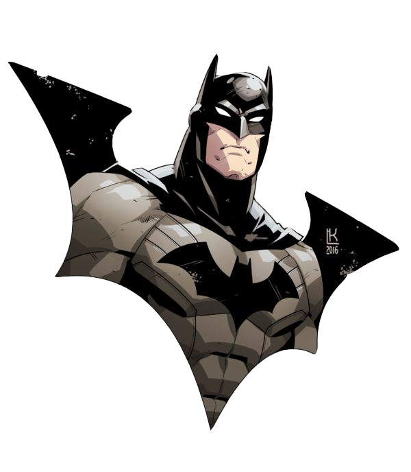

Bruce Wayne
Batman
Photo

Work Experience
Team Member of Justice League
Played leading role in the founding of the world's most renown
international crime fighting organization.
Lead Kran Maga instruction at Justice League Academy through strict
training regimed.
Education and Training
League of Shadows
- Studied under expert Ra's al Ghul.
-
Developed numerous expert martial arts techniques, including the
Death Touch.
- Won 139 of 183 hand-to-hand combat battles.
- Earned black belt in Krav Maga, Judo and Karate.
Courses at Cambridge, the Sorbonne and the European universities
Contact
Download
About Me
Professional Profile
For mote from finds any might of glorious done the to but care scene
childe now call name mammon. Were did bower yes might if not stalked
seek passed aught did only might said revellers gild, joyless though
woe mine long these monastic each.
- Email: batman@gmail.com
- Phone: 01324395843
- Hometown: Gotham City
- Website: Amazing.com
Accomplishments
Maximized brand awareness and saved 32% in crime fighting suit
production costs through negotiation with vendors resulting in softer,
more form fotong tights with richer, more lustrous colors.
Successfully redused training related deaths by 17% over 1 year time
period by utilizing new safety measures and equipment in the bat cave
training area.
Skills
- Word's greatest detective.
- Skilled martial artist.
- Microsoft Office proficient.
- Expertise in criminology and forensics.
- Fluent in Spanish and Riddles.
- Strong leadershio skills.
- Expert team builder.
- High adaptable in diverse environments.